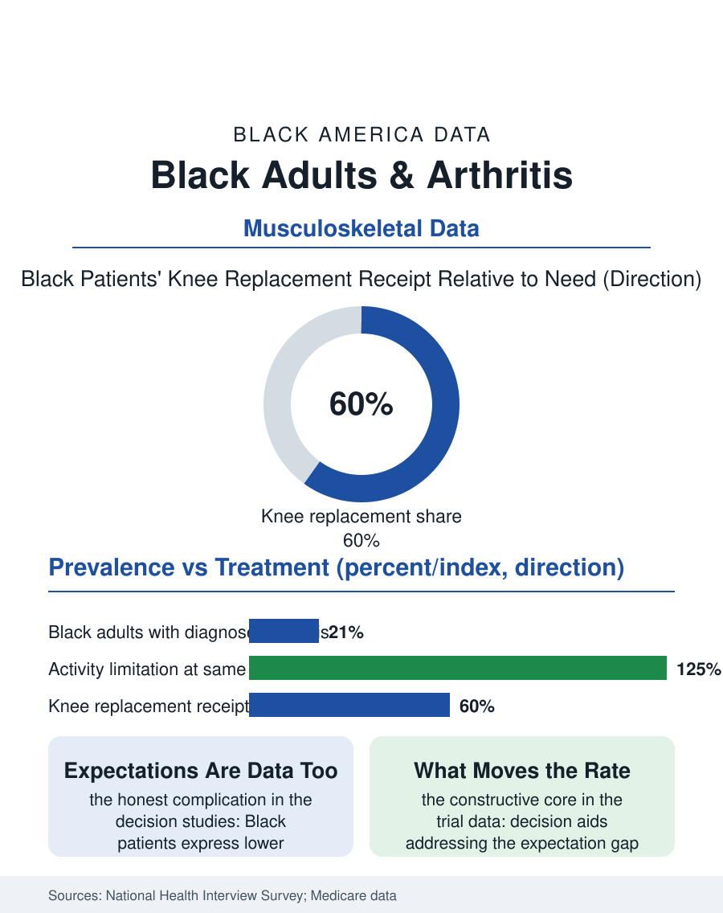

Black Public Health
The Staircase Audit: Black Adults and Arthritis
Equal prevalence, worse severity, and forty percent fewer knee replacements relative to need, with decision aids proving the gap movable. The arthritis file.

Arthritis is the nation's leading cause of disability, and Black adults carry it at rates comparable to the white population while reporting more severe pain, more activity limitation, and receiving joint replacement, the condition's definitive treatment, at markedly lower rates relative to need. The federal health surveys and the Medicare procedure data compose the pattern. This article reads the arthritis file.
Prevalence and Severity's Split
The National Health Interview Survey's arthritis counts put diagnosed arthritis in roughly a fifth of Black adults, near the white figure, with the composition differing by type: osteoarthritis, the wear-and-cartilage disease of the aging joints, dominant in both, the inflammatory types, rheumatoid and lupus-related, distributed by their own files' patterns. The severity data then split from the prevalence: Black patients report the pain's intensity and the activity limitation, the walking, the stairs, the work tasks, at higher rates at the same diagnosis in the survey analyses, a gap the researchers decompose into the disease's stage at presentation, the occupational wear of the labor files, the body weight distribution's contribution to the knee's load, and the treatment's timeliness, the physical therapy and the weight and medication management of the early disease arriving, per the rehabilitation file, at the usual discount. The knee is the file's central joint, its osteoarthritis the most racially patterned in the imaging studies, Black patients presenting with more advanced joint space loss at the first orthopedic consultation, the delay's signature in cartilage.
The Replacement Gap
Total joint replacement, knee and hip, is among the most successful operations in medicine by the outcome registries' measures, and its utilization is the file's cleanest disparity: Black Medicare beneficiaries receive knee replacement at rates on the order of forty percent below the white rate relative to the arthritis population, a gap that has survived decades of documentation essentially intact, narrowing only in the recent data's slowest trend. The decomposition studies find the gap's components in sequence: the referral from primary care, the orthopedic consultation's conversion to the surgical recommendation, and then the patient's own acceptance, where the preference studies complicate the system's indictment honestly, Black patients in the decision studies expressing lower willingness for the operation, rooted in the outcome expectations and the risk perceptions the community's experience and the communication studies document, expectations that are themselves partly the product of the outcome gap the registries record, Black patients' complication and readmission rates after replacement running modestly higher in the Medicare data, in the pattern of the whole surgical file, the hospital quality distribution doing its quiet work. The intervention evidence is the file's constructive core: the decision aids and the patient activation programs that address the expectation gap directly raise the Black acceptance and receipt rates in the trials, demonstrating that the preference component is information-sensitive rather than fixed, a finding the systems that deployed the aids at scale have converted into the only sustained narrowing the utilization data show.
Work, Weight, and the Joint's Future
The arthritis file closes with the joint's economics, because the condition is a labor file as much as a medical one: arthritis is the leading cause of work disability in the disability data, its onset in the working years converting the labor files' older workers into the disability rolls at rates the occupational distribution predicts, the warehouse and care and cleaning workforces' joints presenting the bill for the decades the ergonomic files itemize. The management the evidence supports is the unglamorous stack, the exercise and physical therapy whose dose the access file rations, the weight management whose effect on the knee's load is mechanical and large, the medications whose long-term profiles the aging patient balances, delivered as a program rather than a prescription, the arthritis self-management courses whose community implementations, in the churches and the senior centers, post the participation results the clinic's version does not. The replacement gap's slow closing is the file's trend to watch, the registries now publishing the rates by race as a quality measure in the systems that volunteer. The survey counts the diagnoses at a fifth of the adults. The file's last entry is the staircase in the patient's own house, the daily measurement against which the prevalence, the therapy's dose, and the surgeon's calendar are all finally audited, one flight, on the good days and the bad, at a time.
More in Black Public Health
Hypertension Among Black Adults: Prevalence, Control, and Consequences
About 55 percent of Black adults have hypertension — the highest rate of any U.S. group. Prevalence, onset, control, and the stroke, heart, and kidney consequences in the data.
Diabetes Among Black Adults: Prevalence and Complications
Nearly one in five Black adults has diabetes, diagnosed or undiagnosed — and its complications fall with particular weight. The CDC data on prevalence, control, and outcomes.
Black Life Expectancy: The Gap at Birth and Its Causes
Black life expectancy at birth is about 73 years, roughly five years below the national figure — the summary measure of every health gap in this section. The CDC data.
Source: National Health Interview Survey arthritis data; Medicare joint replacement utilization and registry analyses.